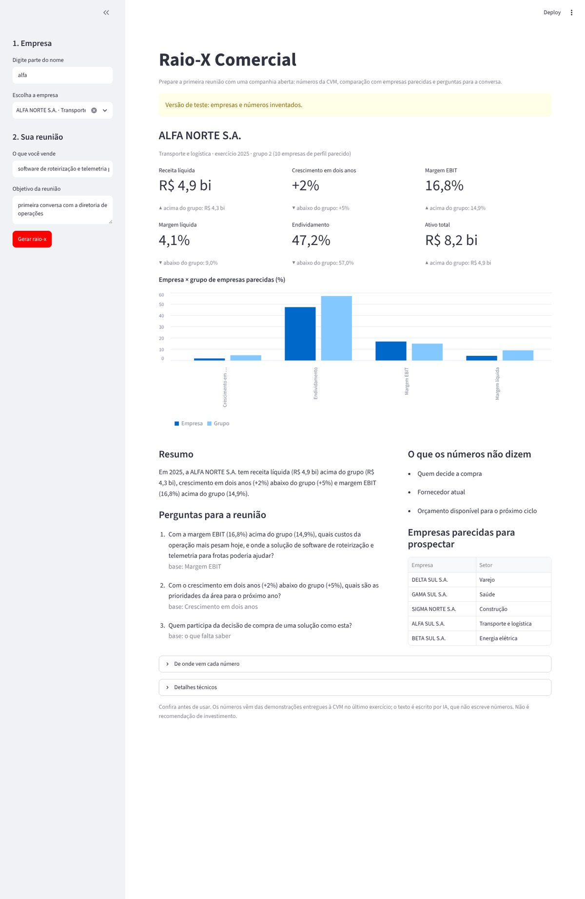

Raio-X Comercial
Prepara a primeira reunião de um vendedor B2B com uma grande empresa, em minutos, usando só dado público. O LLM escreve o texto, mas não pode escrever nenhum número.

O problema
Antes da primeira reunião com uma grande conta, o vendedor B2B passa horas juntando balanço, notícia e concorrente à mão, e mesmo assim chega sem saber o que perguntar.
A pergunta do projeto: dá para gerar esse preparo em minutos, só com dado aberto, sem a IA inventar número?
Dados
- DFP da CVM (demonstrações financeiras padronizadas, dado aberto), de 2023 a 2025.
- 595 empresas e 384.591 linhas de contas, carregadas e modeladas em PostgreSQL.
- Indicadores derivados: receita, crescimento em dois anos, margem EBIT, margem líquida, endividamento e ativo.
Como funciona
- O usuário escolhe a empresa e descreve o que vende.
- O sistema calcula os indicadores e compara com o grupo de empresas parecidas.
- O k-means define o grupo; os 5 vizinhos mais próximos viram sugestão de prospecção.
- O LLM escreve o resumo e as perguntas para a reunião com marcadores no lugar dos números.
- Um validador confere a saída e o código troca cada marcador pelo valor real. Se o texto citar um número que não veio do dado, ele é barrado.
Decisão que mais importou
A primeira clusterização deu silhueta de 0,77, que parece ótima. Olhando os grupos, 567 das 595 empresas caíam num grupo só: a métrica estava boa e o resultado era inútil. Troquei para k = 4, com silhueta de 0,29 e grupos que fazem sentido de negócio. A lição: métrica sem olhar o dado engana.
Custo e qualidade
- Cerca de US$ 0,0008 por relatório, com um modelo leve e saída estruturada.
- 259 testes automatizados no projeto do time, incluindo os do validador (remove dígitos soltos, troca marcadores, barra perguntas com base inválida).
- Os itens que o validador remove ficam visíveis em "Detalhes técnicos", para o usuário ver o que foi barrado.
- Interface em Streamlit. A entrega em Docker e a infraestrutura foram feitas por um colega do time.
Imagens

Meu papel
Defini a regra de que o LLM não escreve número e o desenho do validador; escolhi e corrigi o k; desenhei a avaliação e a tela inicial; coordenei a minha parte.
O código do ML, da camada de IA e do validador foi escrito com Claude Code sob a minha direção, revisado e testado por mim.
O que falta
Repositório privado do time (não posso abrir o código). Os pesos de comparação ainda não foram validados com vendedores reais.